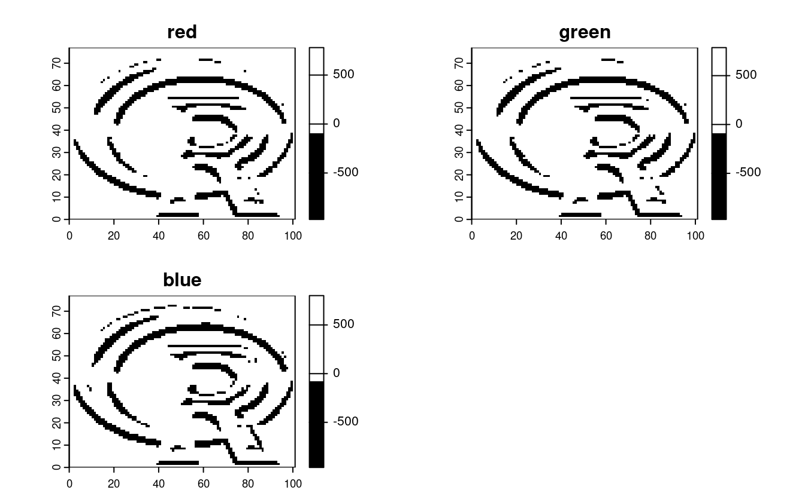
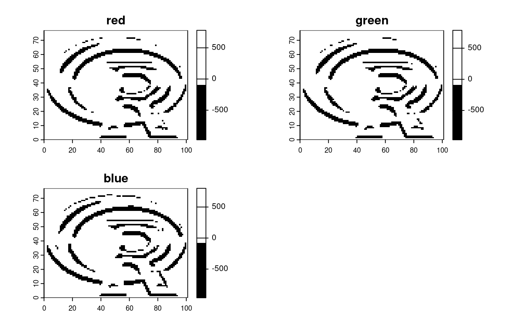
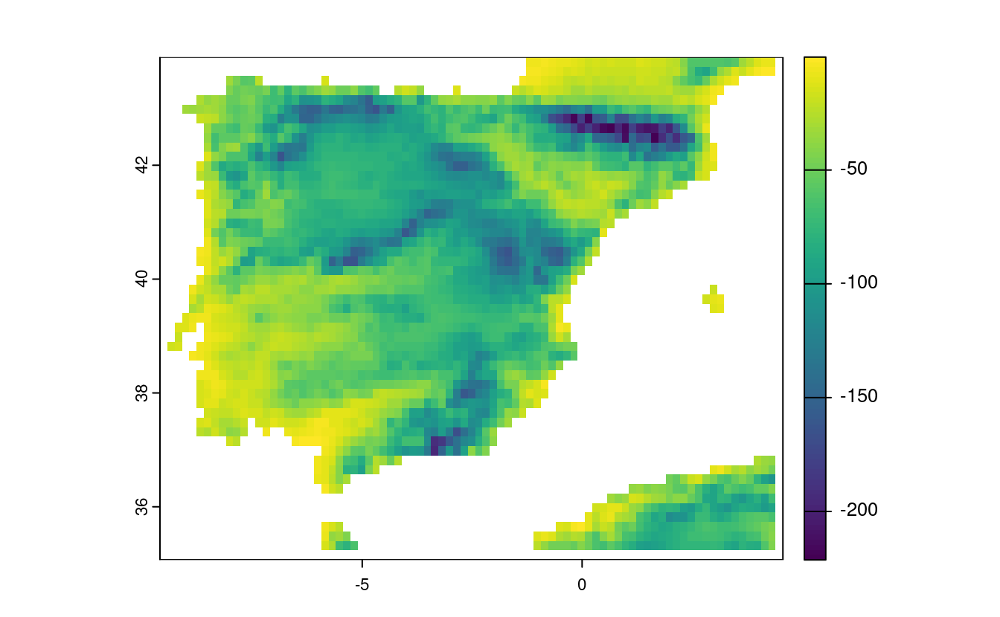

4 Spatial data operations
E1. It was established in Section ?? that Canterbury was the region of New Zealand containing most of the 100 highest points in the country. How many of these high points does the Canterbury region contain?
Bonus: plot the result using the plot() function to show all of New Zealand, canterbury region highlighted in yellow, high points in Canterbury represented by red crosses (hint: pch = 7) and high points in other parts of New Zealand represented by blue circles. See the help page ?points for details with an illustration of different pch values.
library(tmap)
# tmap_mode("view")
qtm(nz) + qtm(nz_height)
canterbury = nz |> filter(Name == "Canterbury")
canterbury_height = nz_height[canterbury, ]
nz_not_canterbury_height = nz_height[canterbury, , op = st_disjoint]
nrow(canterbury_height) # answer: 70
#> [1] 70
plot(st_geometry(nz))
plot(st_geometry(canterbury), col = "yellow", add = TRUE)
plot(nz_not_canterbury_height$geometry, pch = 1, col = "blue", add = TRUE)
plot(canterbury_height$geometry, pch = 4, col = "red", add = TRUE)

E2. Which region has the second highest number of nz_height points, and how many does it have?
nz_height_count = aggregate(nz_height, nz, length)
nz_height_combined = cbind(nz, count = nz_height_count$elevation)
nz_height_combined |>
st_drop_geometry() |>
dplyr::select(Name, count) |>
arrange(desc(count)) |>
slice(2)
#> Name count
#> 1 West Coast 22E3. Generalizing the question to all regions: how many of New Zealand’s 16 regions contain points which belong to the top 100 highest points in the country? Which regions?
- Bonus: create a table listing these regions in order of the number of points and their name.
# Base R way:
nz_height_count = aggregate(nz_height, nz, length)
nz_height_combined = cbind(nz, count = nz_height_count$elevation)
plot(nz_height_combined)
# Tidyverse way:
nz_height_joined = st_join(nz_height, nz |> select(Name))
# Calculate n. points in each region - this contains the result
nz_height_counts = nz_height_joined |>
group_by(Name) |>
summarise(count = n())
# Optionally join results with nz geometries:
nz_height_combined = left_join(nz, nz_height_counts |> sf::st_drop_geometry())
#> Joining with `by = join_by(Name)`
# plot(nz_height_combined) # Check: results identical to base R result
# Generate a summary table
nz_height_combined |>
st_drop_geometry() |>
dplyr::select(Name, count) |>
arrange(desc(count)) |>
na.omit()
#> Name count
#> 1 Canterbury 70
#> 2 West Coast 22
#> 3 Waikato 3
#> 4 Manawatu-Wanganui 2
#> 5 Otago 2
#> 6 Southland 1
#> 7 Marlborough 1
E4. Test your knowledge of spatial predicates by finding out and plotting how US states relate to each other and other spatial objects.
The starting point of this exercise is to create an object representing Colorado state in the USA. Do this with the command
colorado = us_states[us_states$NAME == "Colorado",] (base R) or with with the filter() function (tidyverse) and plot the resulting object in the context of US states.
- Create a new object representing all the states that geographically intersect with Colorado and plot the result (hint: the most concise way to do this is with the subsetting method
[). - Create another object representing all the objects that touch (have a shared boundary with) Colorado and plot the result (hint: remember you can use the argument
op = st_intersectsand other spatial relations during spatial subsetting operations in base R). - Bonus: create a straight line from the centroid of the District of Columbia near the East coast to the centroid of California near the West coast of the USA (hint: functions
st_centroid(),st_union()andst_cast()described in Chapter 5 may help) and identify which states this long East-West line crosses.
colorado = us_states[us_states$NAME == "Colorado", ]
plot(us_states$geometry)
plot(colorado$geometry, col = "grey", add = TRUE)
intersects_with_colorado = us_states[colorado, , op = st_intersects]
plot(us_states$geometry, main = "States that intersect with Colorado")
plot(intersects_with_colorado$geometry, col = "grey", add = TRUE)
# Alternative but more verbose solutions
# 2: With intermediate object, one list for each state
sel_intersects_colorado = st_intersects(us_states, colorado)
sel_intersects_colorado_list = lengths(sel_intersects_colorado) > 0
intersects_with_colorado = us_states[sel_intersects_colorado_list, ]
# 3: With intermediate object, one index for each state
sel_intersects_colorado2 = st_intersects(colorado, us_states)
sel_intersects_colorado2
#> Sparse geometry binary predicate list of length 1, where the predicate
#> was `intersects'
#> 1: 2, 3, 9, 19, 37, 39, 45, 49
us_states$NAME[unlist(sel_intersects_colorado2)]
#> [1] "Arizona" "Colorado" "Kansas" "Oklahoma" "Nebraska"
#> [6] "New Mexico" "Utah" "Wyoming"
# 4: With tidyverse
us_states |>
st_filter(y = colorado, .predicate = st_intersects)
#> Simple feature collection with 8 features and 6 fields
#> Geometry type: MULTIPOLYGON
#> Dimension: XY
#> Bounding box: xmin: -115 ymin: 31.3 xmax: -94.4 ymax: 45
#> Geodetic CRS: NAD83
#> GEOID NAME REGION AREA total_pop_10 total_pop_15
#> 1 04 Arizona West 295281 [km^2] 6246816 6641928
#> 2 08 Colorado West 269573 [km^2] 4887061 5278906
#> 3 20 Kansas Midwest 213037 [km^2] 2809329 2892987
#> 4 40 Oklahoma South 180971 [km^2] 3675339 3849733
#> 5 31 Nebraska Midwest 200272 [km^2] 1799125 1869365
#> 6 35 New Mexico West 314886 [km^2] 2013122 2084117
#> 7 49 Utah West 219860 [km^2] 2657236 2903379
#> 8 56 Wyoming West 253310 [km^2] 545579 579679
#> geometry
#> 1 MULTIPOLYGON (((-115 32.7, ...
#> 2 MULTIPOLYGON (((-109 41, -1...
#> 3 MULTIPOLYGON (((-102 40, -1...
#> 4 MULTIPOLYGON (((-103 37, -1...
#> 5 MULTIPOLYGON (((-104 43, -1...
#> 6 MULTIPOLYGON (((-109 37, -1...
#> 7 MULTIPOLYGON (((-114 42, -1...
#> 8 MULTIPOLYGON (((-104 45, -1...
touches_colorado = us_states[colorado, , op = st_touches]
plot(us_states$geometry, main = "States that touch Colorado")
plot(touches_colorado$geometry, col = "grey", add = TRUE)
washington_to_cali = us_states |>
filter(grepl(pattern = "Columbia|Cali", x = NAME)) |>
st_centroid() |>
st_union() |>
st_cast("LINESTRING")
#> Warning in st_centroid.sf(filter(us_states, grepl(pattern = "Columbia|Cali", :
#> st_centroid assumes attributes are constant over geometries of x
states_crossed = us_states[washington_to_cali, , op = st_crosses]
#> although coordinates are longitude/latitude, st_crosses assumes that they are
#> planar
states_crossed$NAME
#> [1] "Colorado" "Indiana" "Kansas"
#> [4] "Missouri" "Nevada" "West Virginia"
#> [7] "California" "District of Columbia" "Illinois"
#> [10] "Kentucky" "Ohio" "Utah"
#> [13] "Virginia"
plot(us_states$geometry, main = "States crossed by a straight line\n from the District of Columbia to central California")
plot(states_crossed$geometry, col = "grey", add = TRUE)
plot(washington_to_cali, add = TRUE)
E5. Use dem = rast(system.file("raster/dem.tif", package = "spDataLarge")), and reclassify the elevation in three classes: low (<300), medium and high (>500).
Secondly, read the NDVI raster (ndvi = rast(system.file("raster/ndvi.tif", package = "spDataLarge"))) and compute the mean NDVI and the mean elevation for each altitudinal class.
library(terra)
#> terra 1.7.3
dem = rast(system.file("raster/dem.tif", package = "spDataLarge"))
ndvi = rast(system.file("raster/ndvi.tif", package = "spDataLarge"))
#1
dem_rcl = matrix(c(-Inf, 300, 0, 300, 500, 1, 500, Inf, 2), ncol = 3, byrow = TRUE)
dem_reclass = classify(dem, dem_rcl)
levels(dem_reclass) = data.frame(id = 0:2, cats = c("low", "medium", "high"))
plot(dem_reclass)
#2
zonal(c(dem, ndvi), dem_reclass, fun = "mean")
#> cats dem ndvi
#> 1 low 274 -0.363
#> 2 medium 392 -0.289
#> 3 high 765 -0.208E6. Apply a line detection filter to rast(system.file("ex/logo.tif", package = "terra")).
Plot the result.
Hint: Read ?terra::focal().
# from the focal help page (?terra::focal()):
# Laplacian filter: filter=matrix(c(0,1,0,1,-4,1,0,1,0), nrow=3)
# Sobel filters (for edge detection):
# fx=matrix(c(-1,-2,-1,0,0,0,1,2,1), nrow=3)
# fy=matrix(c(1,0,-1,2,0,-2,1,0,-1), nrow=3)
# just retrieve the first channel of the R logo
r = rast(system.file("ex/logo.tif", package = "terra"))
# compute the Sobel filter
filter_x = matrix(c(-1, -2, -1, 0, 0, 0, 1, 2, 1), nrow = 3)
sobel_x = focal(r, w = filter_x)
plot(sobel_x, col = c("white", "black"))
filter_y = matrix(c(1, 0, -1, 2, 0, -2, 1, 0, -1), nrow = 3)
sobel_y = focal(r, w = filter_y)
plot(sobel_y, col = c("black", "white")) 

E7. Calculate the Normalized Difference Water Index (NDWI; (green - nir)/(green + nir)) of a Landsat image.
Use the Landsat image provided by the spDataLarge package (system.file("raster/landsat.tif", package = "spDataLarge")).
Also, calculate a correlation between NDVI and NDWI for this area (hint: you can use the layerCor() function).
file = system.file("raster/landsat.tif", package = "spDataLarge")
multi_rast = rast(file)
ndvi_fun = function(nir, red){
(nir - red) / (nir + red)
}
ndvi_rast = lapp(multi_rast[[c(4, 3)]], fun = ndvi_fun)
plot(ndvi_rast)
ndwi_fun = function(green, nir){
(green - nir) / (green + nir)
}
ndwi_rast = lapp(multi_rast[[c(2, 4)]], fun = ndwi_fun)
plot(ndwi_rast)
two_rasts = c(ndvi_rast, ndwi_rast)
names(two_rasts) = c("ndvi", "ndwi")
# correlation -- option 1
layerCor(two_rasts, fun = cor)
#> ndvi ndwi
#> ndvi 1.000 -0.913
#> ndwi -0.913 1.000
# correlation -- option 2
two_rasts_df = as.data.frame(two_rasts)
cor(two_rasts_df$ndvi, two_rasts_df$ndwi)
#> [1] -0.913

E8. A StackOverflow post shows how to compute distances to the nearest coastline using raster::distance().
Try to do something similar but with terra::distance(): retrieve a digital elevation model of Spain, and compute a raster which represents distances to the coast across the country (hint: use geodata::elevation_30s()).
Convert the resulting distances from meters to kilometers.
Note: it may be wise to increase the cell size of the input raster to reduce compute time during this operation (aggregate()).
# Fetch the DEM data for Spain
spain_dem = geodata::elevation_30s(country = "Spain", path = ".", mask = FALSE)
# Reduce the resolution by a factor of 20 to speed up calculations
spain_dem = aggregate(spain_dem, fact = 20)
# According to the documentation, terra::distance() will calculate distance
# for all cells that are NA to the nearest cell that are not NA. To calculate
# distance to the coast, we need a raster that has NA values over land and any
# other value over water
water_mask = is.na(spain_dem)
water_mask[water_mask == 0] = NA
# Use the distance() function on this mask to get distance to the coast
distance_to_coast = distance(water_mask)
#>
|---------|---------|---------|---------|
=========================================
# convert distance into km
distance_to_coast_km = distance_to_coast / 1000
# Plot the result
plot(distance_to_coast_km, main = "Distance to the coast (km)")
E9. Try to modify the approach used in the above exercise by weighting the distance raster with the elevation raster; every 100 altitudinal meters should increase the distance to the coast by 10 km. Next, compute and visualize the difference between the raster created using the Euclidean distance (E7) and the raster weighted by elevation.
# now let's weight each 100 altitudinal meters by an additional distance of 10 km
distance_to_coast_km2 = distance_to_coast_km + ((spain_dem / 100) * 10)
# plot the result
plot(distance_to_coast_km2)
# visualize the difference
plot(distance_to_coast_km - distance_to_coast_km2)